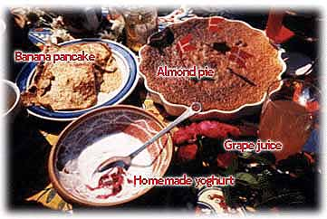

|
|
||
| SCD Web Arkiv - dansk sektion | ||
| SCD OPSKRIFTER - PÅ DANSK | |
 og hjemmelavet yoghurt [2] (alternativ version)
(Disse er kun et supplement til de engelske opskrifter ) |
| |
|
| - med hensyn til opskrifterne i bogen "Breaking the Vicious Cycle" hvis du sidder med den engelske udgave...
|
| |
|
| |